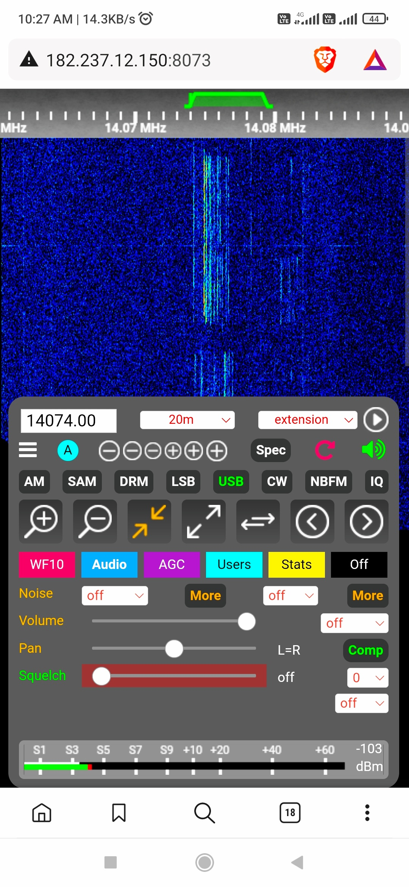

What is a Software Defined Radio ? (Wikipedia)
===============================
Thanks to rigreference.com
Solar Terrestrial Data from N0NBH
Thanks to N0NBH for the Solar Data
===== Weather in Nagpur from Weather and Radar Website =====
Nagpur Lightning
===== Feynman Lectures in Physics , Caltech =====
Feynman Lectures in Physics
Vol. II : Electromagnetism
===== Links To Web SDRs =====
Web SDR Map
Web SDR List
==== Within India ====
Dimapur , India
Hyderabad , India
New Delhi, India
==== Outside India ====
Kathmandu , Nepal ( It is so quiet )
Tarlee , South Australia Remote Rx
Univ of Twente , The Netherlands
Galo , Sweden
Rome, Italy
Cha-Am , Thailand
So Phisai, Thailand
GeoStationary QO-100 (Es'Hail-2)
QO-100 Geostationay Sat
International Space Station Tracking : All Passes
Propagation Prediction Tools
PSK Reporter
DX Maps
DX Heat
Reverse Beacon Network
Ham Waves
HamQSL
HF Propagation Map
QSL.net HF Propagation
ARRL Propagation
HF Propagation
VOACAP Online
WM7D Solar Resources
Solar Band State
PSK Reporter Live Propagation
DX Zone Propagation Software
===== VU2SRB ======